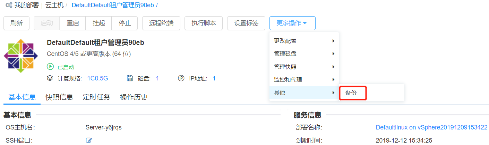

Deployments
1. My Deployment
My Deployment page allows you to view the status, details, monitoring, and more of the service deployment. After selecting the wizard request or service catalog request in the Service Catalog, the user can view the deployed service status on the service deployment interface. If the deployment has an approval process, the service deployment page can be redirected to the approval page to view the current approval process. If there is no approval, you can view the deployment details.
After selecting "Deployment" - "My Deployment" in the left navigation bar, the user will see the service deployment list, click Advanced Search, according to the business group, stage (run, in progress, shutdown, failed, cancelled, deployed in the approval), status (normal, abnormal), owner, project to filter, or directly search operation
In the service deployment list, users can select one or more service deployments to perform some operations quickly, including “stop”, “installation software”, “copy”, “extend expiration time”, “dismount”, “delete management information”, "Change Owner", more operations such as: "Change Project" "Change Business Group" and "Scale in/out"
Click the service deployment name to view the details of the service deployment. The service deployment details information interface includes "Basic Information", " Topology", "Operation History", "Monitoring" (Monitoring of Instances and Application Components), and Operations at the Top
Basic Information includes the name of the service deployment, business group, project, blueprint, resource bundle, cloud platform, and related information such as cost, status, and time. It also includes a list of input parameters for the service deployment and output result information. After the service deployment fails, some scenarios can be repaired offline. After the repair is successful, the service deployment status is changed, and the operation failure is changed to running.
Topology includes blueprints, details, and process information for service deployment. Hovering over the service topology map will display the key information of the node. For example, the server node will display the instance name, guest operating system, IP address, memory, total disk space, number of vCPUs, CPU usage, memory usage, etc.
Operation History shows the operation history of the service deployment
Monitoring displays monitoring information applied to components in the deployment
1.1. Service Deployment and Operation
You can perform operations on the service deployment in the service deployment list interface or by clicking the service deployment name to enter the service deployment details interface. The operations of the service deployment are controlled by the business group and service configuration. You can choose to enable or disable the corresponding \operations in the "Business Group" - "Service Deployment Ops Entitlement" to the corresponding role. If enabled, you can also specify whether approval is required and its approval template. If enabled, you can select the service group configuration for the service or the business group configuration in the Service Design - Catalog Config - Service Deployment Ops Entitlement to delete the operations.
1.1.1. Refresh status
Users cannot view the details of the lost virtual machine. In some business scenarios, the lost virtual machine rejoins the platform and needs to be = manually refreshed the state. At the same time, it must be able to support the refresh of other cloud resource status.
- Support for batch refresh: in the service deployment list, select one or more deployments
- Click the “Refresh Status” button to manually refresh the status. The button to refresh the state is placed first.
- After refreshing, the status of each service deployment in the background updates including modification of specification configuration, addition of disk and modification of IP address and the refresh result is returned by notification. The refreshed operation is logged to the operation history.
- When performing operations on the instance, SmartCMP can refresh the correct state of the virtual machine based on the UUID of the virtual machine.• When performing operations on the instance, SmartCMP can refresh the correct state of the virtual machine based on the UUID of the virtual machine.
1.1.2. Start service deployment
The Start Service Deployment action is available if the service deployment is down. This task can be triggered by timing (sometime in the future) by setting "Enable Timing".
1.1.3. Stop Service Deployment
If the service deployment is in a running state, you can "stop service deployment", which will shut down all virtual machines under the service deployment. This task can be triggered by timing (sometime in the future) by setting "Enable Timing".
1.1.4. Install software
Select the instance under Deployments and select the software you need to install. The software list is derived from the "Software Components" and allows you to change the property key values of the software.
1.1.5. Change owner
Changing the owner of a service deployment will also change the owner of all virtual machines under the service deployment. Choose the target owner, who is a member of the business group.
1.1.6. Change project
Changing the project to which the service is deployed will also change the project of all virtual machines under the service deployment. Select the target project and select the user under the project.
1.1.7. Change business group
All virtual machines under the service deployment will be changed to the new business group at the same time, and the relevant information such as the owner will be modified. Select the target business group, the project (optional), the owner (the member under the business group), and the resource bundle (the resource bundle under the business group). If the resource pool list is empty, it means that no resources are available on the business group.
1.1.8. Scale in/out
Expand the instance of the current deployment. The static IP deployment server does not support scaling. At least 1 instance can be scaled, up to 6. This task can be triggered by timing (sometime in the future) by setting "Enable Timing".
1.1.9. Replication Service Deployment
After the service deployment is successful, the service request deployment environment can be copied to other cloud platforms or cloned to the current cloud platform.
Common application scenarios: for example, copying vSphere service deployment to Aliyun, vSphere to vSphere, Aliyun to Ali Proprietary Cloud
Steps:
Select the target service: select the target business group, project (optional), owner, and service, and select the current instance node as a template to copy/create to the target node in the selected service topology map.
Configure parameters: fill in the service deployment name (if the business group has rules, it will be automatically generated according to the business group rules), service deployment lease expiration time, and configure other node parameters in the service topology map, for each compute node, you can choose Copy or create (deploy a new machine from the template)
Click Submit and wait for execution.
「Note」Require third-party support if it is cross-cloud replication.
1.1.10. Extend the expiration time
To extend the lease expiration time of the service deployment, click to display the maximum number of deferrable times set in the business group and the number of deferred times, and choose which time to extend to, which is accurate to the minute.
1.1.11. Dismount Service Deployment
After the service is deployed, the cloud resources under the service deployment can be removed. Dismounting a service deployment will remove all new resources created in SmartCMP. If the service deployment includes shared resources, the shared resources will not be deleted; if the service deployment contains existing resources, such as LoadBalance "Use existing resources", the existing resources will not be deleted; if you are the resources owner after you import the resources, you can delete imported resources.
1.1.12. Delete Management Information
Delete the information about the service deployment and related VMs on SmartCMP and keep them in the related cloud platform without deleting them.
1.1.13. Delete a node
The compute nodes, storage, and software components can be removed after the service is deployed. Click Delete Node to display the service deployment name, all compute nodes, storage and software component nodes under the deployment, and deployment status. You can delete the single or multiple nodes or enable scheduled time to operate.
1.1.14. Re-execute deployment
The deployment node can be re-executed after the service is deployed. Steps:
Click Re-execute Deployment to display the service deployment name, all compute nodes/storage node/software component nodes under the deployment, and deployment status
Can be re-executed by selecting single or multiple nodes; enable timing, specify time for operation
Click "Submit" and wait for execution
2. Instance
Users can view and manage the instance list according to the following steps. The activation and operation need to be set at the business group level or service configuration level:
After selecting “My Deployment” - “Instance” in the left navigation bar, the user will see a list of instances. You can view the instance name, cloud platform, operating system, instance status (started, lost, stopped, etc.), health status, business group, project, service deployment, lease expiration time, retention expiration time, owner, IP address, label, installed software, resource label, etc. Other display columns can be selected by clicking "Show column", or by selecting some columns. Filter by business group, project, owner, status, tag, cloud platform type, whether monitoring is enabled, cloud platform type, whether to install agent, operating system type, whether to import or not.
In the instance list, the user can select one or more instances to perform some operations quickly, including “start”, “reboot”, “suspend”, “stop”, “execute script”, “setup tag”, “enable/switch monitor”, "update monitoring agent", "update automation agent". The specific operation introduction will be expanded below
You can also click on a instance to enter its details interface for management and operation. The virtual machine details interface includes “Basic Information”, “Operation History”, “Snapshot”, “Monitoring”, “Application List” and the top operation list.
“Basic Information” includes some information about the virtual machine and its related hosts, the organization information of the virtual machine in the platform, and the CPU, memory, storage running status, VNC connection information, etc. of the virtual machine.
“Operation History” includes the history of operations performed by this virtual machine.
“Snapshot” displays the current snapshot information (snapshot name, creation time, etc.), click “Add” to create a snapshot.
“Monitoring” includes monitoring data of the virtual machine CPU, memory, disk, and network (you can adjust the time span or average time to view historical monitoring data as needed)
「Note」Only the VMs that are installed and monitored in the VM template can be seen in the monitoring after the deployment is generated. For details on how to configure the installation monitoring, see the chapter "VM Template".
“Application List” displays the list of applications that are currently installed on the virtual machine.
Operation list includes a list of operations that can be performed by the virtual machine. The specific operation introduction will be expanded below.
「Note」Only those virtual machines with the operation permission configured when the business group is set or the service is configured can see the list of allowed operations after the deployment is generated. For details on how to configure the virtual machine operation entitlement, see "Business Group Management" and "Service Configuration".
2.1. Instance Operation
On the instance list interface or click the instance name to enter the instance details page, you can perform the following operations on the instance. The operations are enabled or disabled by the business group/service deployment.
2.1.1. Startup
The (shut down) virtual machine can be started in real time, or it can be triggered (at some point in the future) by setting "Enable Timing".
2.1.2. Suspend (vSphere)
The virtual machine that is suspended (on) can be triggered by timing (at some point in the future) by setting "Enable Timing".
Suspending multiple (powered-on) virtual machines can be triggered by timing (at some point in the future) by setting "Enable Timing".
「Note」only vSphere virtual machines has this option.
2.1.3. Stop
To stop (i.e., power off) the virtual machine (on the power-on state), you can trigger the task by timing (at some point in the future) by setting "Enable Timing".
2.1.4. Restart
Restart the virtual machine (on the power-on state) by setting "Enable Timing" and timing (at some point in the future) to trigger this task.
Restart multiple (powered-on) virtual machines, you can trigger this task by setting "Enable Timing" and timing (at some point in the future).
2.1.5. Execute script
A script in a script library of virtual machine can be triggered by timing (at some point in the future) by setting "Enable Timing" or by selecting an IP address.
「Note」If you do not have an agent installed, you must enter the username and password of the virtual machine when executing the script.
2.1.6. vMotion Migration (vSphere)
Support for compute resource migration and storage migration to vSphere. Use vSphere's vMotion migration feature to migrate virtual machines between different hosts using different migration methods.
Calculate resource migration, select the target host, you can trigger this task by setting “Enable Timing” and timing (at some point in the future).
Storage migration:
Linked clones: Select Require Storage to migrate the target instance to the selected storage.
Full clone: Select the provisioning mode (same source format, thin provisioning, thick provisioning delay zeroing, post provisioning zero); select virtual machine storage policy (retain existing virtual machine storage policy, datastore defaults, and other Define the storage policy); storage (determine the compatibility of the storage according to the selected storage policy, and display the space and proportion of each storage)
Enable Timing: Set the time to trigger this task at some point in the future
「Note」Only available for vSphere virtual machines. When you migrate storage, you can retain the original provisioning mode and storage policy or modify it.
2.1.7. Remote terminal
「Note」OpenStack virtual machine remote terminal operation requires the use of VNC Web Client, your browser needs to support HTML5 Canvas and HTML5 WebSockets. If you need to know all the browsers supported by the VNC Web Client, you can visit https://github.com/kanaka/noVNC/wiki/Browser-support
2.1.8. WEB Remote Terminal (vSphere)
vSphere's Web console client does not require special browser support.
「Note」Only available for vSphere virtual machines.
2.1.9. Set the Instance Label
「Note」Allow each user to set a label for the instance without requiring an administrator to configure an operating license.
Key tags can be set for instances to classify and filter instances.
The instance label is used as follows:
Add tags
Add tags to the newly created instance:
① Select Deployments - Instance in the left navigation bar. On the instance list interface, select an instance.
② Click “More Actions” above, “Set Label”, the setting interface of the key value label appears.
③ Fill in the key, value, click "Create" "Execute", the label is created successfully; you can also select the existing label, click "Execute". In the right column of the instance list, you can view the added instance label.
Add tags to imported instances:
① In the left menu, select “Infrastructure”, click “Resource Bundles”, select a resource bundle, and enter the Edit Resource Bundle interface.
② Go to the “Instance” page and click “Import”
③ Click the input box after “Label” to pop up the key value label creation page, enter the key value, create a new label, or select the existing label.
Modify/Delete Label:
On the instance list interface, select a instance; click “Set Label” to display the key label of the instance, which can be directly deleted and re-created.
2.1.10. Add a new disk
Add a new disk to the virtual machine, which can be triggered (at some point in the future) by setting "Enable Timing".
「Note」Cannot be performed in the suspended state
2.1.11. Extend Disk
To extend an existing disk to a virtual machine, you can trigger the task by timing (at some point in the future) by setting "Enable Timing".
「Note」Support expansion through the cloud management platform or the disk created in the previous section. This operation cannot be performed in the suspended state.
2.1.12. Delete a disk
Delete a disk other than the system disk on the virtual machine, including the disk added by the service configuration or the disk added by the operation.
2.1.13. Add a New Logical Volume
Add a new logical volume to the Linux virtual machine, which can be triggered (at some point in the future) by setting "Enable Timing".
「Note」Cannot be performed in the suspended state
2.1.14. Expand Logical Volumes
To extend an existing logical volume to a Linux virtual machine, you can trigger this task by timing (at some point in the future) by setting "Enable Timing".
「Note」Support extensions that are deployed through the cloud management platform or created in the previous section. This operation cannot be performed in the suspended state.
2.1.15. Adjust the configuration
Adjust the configuration (vCPU, memory) of the virtual machine or container node and click Submit.
2.1.16. Add a Network Card
Add a new NIC, take effect for all instances of the compute node, select the network label and IP allocation mode. At present, vSphere only supports DHCP. OpenStack and PowerVC support two IP allocation modes: DHCP and IP pool. OpenStack instance also supports manual IP assignment.
2.1.17. Delete a network card
Delete the newly added NIC of the operation and maintenance, which will affect all instances of the node.
2.1.18. Mount NFS
Mount an NFS (Network File System) to the virtual machine, which can be triggered (at some point in the future) by setting "Enable Timing".
「Note」This operation is available only when the NFS cloud platform and resource bundle are configured.
2.1.19. Update the instance display name
Click "Update Instance Display Name" to reset the display name of the instance.
2.1.20. Reset the Operating System Host Name
Click "Reset OS Hostname" to reset the operating system hostname.
「Note」Windows operating system can only perform this operation if the agent is installed.
2.1.21. Enhance Linux User Permissions
Temporarily give a Linux user a Sudo privilege (free secret) for a while. If the instance has an automated agent installed, simply enter the username and permission usage time. If the instance does not have an automated agent installed, enter the administrator username and password (or select a key pair) and select an IP address.
2.1.22. Reset Password
Click "Reset Password" to reset the new password for the virtual machine.
2.1.23. Application level lifecycle operations
In the detailed interface of the instance, there is an application tab with a list of applications belonging to the instance. When an application is selected, the life cycle operation of the application appears, and the operations include "start", "stop" and "custom" operations.
2.1.24. Create a Snapshot
When creating a snapshot, set a timed loop task, for example, automatically create a snapshot at a certain time every day, every week, or every day of the month, and support to view and cancel the timed loop that has been set at any time.
In the left navigation, select “Deployments” - “Instance” and select “Snapshot Information” on the right.
Click the “Add” button to fill in the timed loop information.
Click Submit, and the task of creating a snapshot periodically is set successfully.
In the left navigation, select “Deployments” - “Instance” and select “Timed Task” on the right.
Select the operation name and click Delete above to cancel the scheduled loop task.
2.1.25. Revert to Snapshot (vSphere)
To restore a virtual machine to a previous snapshot, you can trigger this task by setting "Enable Timing" and timing (at some point in the future).
「Note」Only available for vSphere virtual machines.
2.1.26. Delete a Snapshot
Delete created snapshot
2.1.27. Execute a Snapshot Policy
A snapshot policy is executed for a single disk under the instance of Aliyun, and the snapshot policy is created in the Aliyun platform.
2.1.28. Cancel a Snapshot Policy
Cancel the snapshot policy for a single disk under the instance of Aliyun.
2.1.29. Add an automated agent
If the instance does not have an automated agent installed, you can install it by: entering the username and password/key pair with SSH and administrator privileges, and clicking "Execute" after the input is complete. If the port is not entered, you need to enter the port number in the instance details page, "SSH port".
2.1.30. Update an Automation Agent
If the instance has an automated agent installed, it can be updated with this action.
2.1.31. Enable/Switch Monitoring
Currently, two monitoring methods are supported for the vSphere instance: built-in agent monitoring and cloud platform monitoring. Built-in agent monitoring includes pre-installed monitoring agent and WinRM/SSH monitoring agent (WinRM for Windows operating system, SHH for Linux operating system). Ccloud platform monitoring refers to reading monitoring data of virtual machine directly from vCenter and there is no need to install a monitoring agent.
Only built-in monitoring agents are supported for the OpenStack cloud platform.
2.1.32. Update Monitoring Agent
If the instance has built-in agent monitoring installed, it can be updated through this operation.
2.1.33. Others
Support customize operations according to actual needs. Click "More Operations"-"Others" to display a list of customized operations. For example, the following figure customizes the backup operation for the virtual machine of the vSphere cloud platform. For the detailed steps of the custom operation, please refer to: Action Configuration

3. Cloud Resources
Under the cloud resource menu, all the cloud resources are uniformly managed, the related information is displayed and the corresponding to each cloud resource are provided.
Click on "Deployments" - "Cloud Resources" in the left navigation bar. On the left, you will see five menus: "Storage", "Container", "Network Resources", "PaaS" and "Software".
3.1.1. Storage
Cloud hard disk
Support unified management of OpenStack/Azure/Alibaba Cloud/QingCloud cloud hard disk.
Click “Cloud Drive” under “Storage” and you will see the list of cloud drives.
On the list of the cloud disk, you can view related information about the cloud disk: name, cloud platform type, status, business group, service deployment, project, owner, size (GB), mount status, mounted cloud host, and creation time
Click on the name to go to the cloud drive details page. The cloud hard drive details page includes "Basic Information" and "Operation History"
Basic Information page of the cloud drive details includes:
Basic information: name, cloud platform type, status, business group, service deployment, project, owner, cloud host to which the size is mounted, creation time, etc.
Organization information: service deployment name, service name, business group, tenant, project, etc.
Operations:
Volume separation: remove the mount relationship between the cloud drive and the cloud host
Volume mounting: Establish mount relationship between cloud and cloud hosts
Resize: Supports resizing of hard drives (Azure/AWS)
Operation History: include the operation history of the cloud drive.
Object storage
Supports unified management of object storage for AWS, Azure, and Alibaba Cloud, respectively S3, Blob, and OSS.en
Click “Object Storage” under “Storage” and you will see the object storage list.
In the object storage list interface, you can view related information about object storage: name, cloud platform type, status, status, business group, service deployment, project, owner, creation time.
Click on the name to enter the object storage details page. The object storage details page includes "Basic Information" and "Operation History"
Basic Information page of the object storage details includes:
Basic information: name, cloud platform type, status, owner, public access level, storage account, resource group, creation time, etc.
Organization information: service deployment name, service name, business group, tenant, project, etc.
Operation History: includes the operation history of the cloud hard disk.
3.1.2. Container
Support to display various component information of Kubernetes in cloud resources, including deployment, container, service, route (Ingress), storage volume (PVC), configuration dictionary (Config Map), secret dictionary (Secrets), etc.
Deployment
Kubernetes' deployment provides declarative updates for Pod and Replica Sets. By describing the desired cluster state in the Deployment, the Deployment Controller will gradually update the current cluster state to the desired cluster state at a controlled speed. The main responsibility of Deployment is also to ensure the number and health of Pod. 90% of the functions are exactly the same as Replication Controller and can be regarded as the next generation Replication Controller.
Support the deployment of resources for the deployment, click on "Container" - "Deployment", you will see the deployment list of Kubernetes: display name, cloud platform type, status, business group, service deployment, project, owner, label , container group, image, and creation time. Advanced Search quickly categorizes list information by business group, status, project, and owner.
Click on the name to go to the deployment details page. The deployment details page includes "Basic Information", "Container Group", "Operation History", "Monitoring", "Triggered Alert", and Operations such as "Update Copy Quantity", "Update Image", "Adjust Configuration".
「Note」"Monitoring" and "Triggered Alerts" tab will only appear if the Prometheus monitoring address is set on the Kubernetes cloud platform.
- Basic Information page of the deployment includes:
Basic information: name, namespace, tags, notes, policies, images, creation time, etc.
Organization information: service deployment name, service name, business group, tenant, project, etc.
Operations:
Update the number of copies: Update the number of copies of the POD (Replicas), click to select the number of copies to be updated in the box, or enable the timing to perform operations at specific times.
Update Images: Update the instance image of the deployment. Click to select the container node to be updated in the pop-up box (required), select the image source, select the image name (required), select the image label, or enable the timing to perform operations at specific times. Click "Submit" and wait for the operation to complete.
「Note」Support integration of Habor and Docker native images as Image Registry. In the Kubernetes cloud platform, a container image source can be added. Reference: Add Kubernetes Cloud Platform
Adjust container configuration: adjust the size of the vCPU and memory of the selected container node, including the request value and maximum value, and the request value (request) must be less than the maximum value (limit)
Operation History: includes the operation history of the deployment.
Monitoring: Display the monitoring information of the deployment, such as Pod CPU usage, Pods memory usage, Pod network traffic, etc. You can change the time span to view the monitoring information of different time periods.
Triggered Alerts: According to the defined alert policy and alert operation for the container, if the monitoring information detects that the deployment has reached the triggering alert condition, an alert will be triggered. This page displays the triggered alert information and can be used to resume, pause, cancel, etc.
Daemon set
The Kubernetes daemon set (Daemon Set) guarantees that a copy of the container is run on each Node, often used to deploy some cluster logs, monitoring or other system management applications. After the deployment is successful, you can view the details in Cloud Resource - Containers - Daemon Set in the left navigation bar.
In the Container Service - Daemon Set, you can view basic information about the daemon set, such as: name, cloud platform type, status, business group, service deployment, project, owner, label, container group, image, and creation time, etc. Advanced Search quickly categorizes list information by business group, status, project, and owner
Click on the name to go to the Daemon Set details page. Including "Basic Information", "Container Group", "Operation History", "Monitoring", "Triggered Alerts ", etc.
Basic Information page includes:
Basic information: name, namespace, label, comment, image, creation time, etc.
Organization information: service deployment name, service name, business group, tenant, project, etc.
Operations: update the image, adjust the configuration
④ Operation History page: Includes the history of operations performed on the daemon group
「Note」"Monitoring" and "Triggered Alerts" tab will only appear if the Prometheus monitoring address is set on the Kubernetes cloud platform.
Stateful replica set
Kubernetes' stateful set (Stateful Set) is to solve the problem of state service. It consists of the following parts: Headless Service for defining DNS domains, volumeClaimTemplates for creating PersistentVolumes, and StatefulSet for defining specific applications. After the deployment is successful, you can view the details in Cloud Resource - Containers - Stateful Replica Set in the left navigation bar.
In Containers - Stateful Replica Set, you can view basic information about a stateful replica set, such as: name, cloud platform type, status, business group, service deployment, project, owner, label, container group, images and creation time, etc. Advanced Search quickly categorizes list information by business group, status, project, and owner.
Click on the name to go to the details page of the Stateful Set. Including "Basic Information", "Container Group", "Operation History", "Monitoring", "Triggered Alerts", and Operations such as "Update Copy Quantity", "Update Image", "Adjust Configuration", etc.
Container
After the K8s Container is successfully deployed, you can view the details in Cloud Resource - Containers in the left navigation bar.
In the Container list interface, you can view the container's name, cloud platform type, status, business group, service deployment, project, owner, image, port, creation time, and so on. Advanced Search quickly categorizes list information by business group, status, project, and owner
Click on the name to go to the details page of the container. Including "Basic Information" and "Operation History"
Operations: "Adjust configuration"
Service
In a K8 cluster, the service that the client needs to access is the Service object. Each Service corresponds to a valid virtual IP inside the cluster, and a service is accessed through the virtual IP inside the cluster. After the deployment is successful, you can view the details in Cloud Resource - Container - Service in the left navigation bar.
In the list of services of the container service, you can view the name of the service, cloud platform type, status, business group, service deployment, project, owner, cluster IP, internal endpoint, external endpoint, creation time, and so on. Advanced Search quickly categorizes list information by business group, status, project, and owner.
Click on the name to go to the service details page. Includes pages such as "Basic Information", "Container Group", "Operation History", "Monitoring", "Triggered Alert", etc.
Operations: "Update the number of copies", "Update the image" and "Adjust the configuration"
Routing
In Kubernetes, the IP of the service and pod is usually only accessible inside the cluster. Requests outside the cluster need to be forwarded to the NodePort exposed by the service on the Node through load balancing, and then forwarded to the relevant Pod by the kube-proxy, and the ingress is a collection of routing rules for the request to enter the cluster. After the deployment is successful, you can view the details in Cloud Resource – Container - Routing in the left navigation bar.
On the Ingress list, you can view the name of the route, cloud platform type, status, service group, service deployment, project, owner, endpoint, rule, creation time, and so on. Advanced Search quickly categorizes list information by business group, status, project, and owner
Click on the name to enter the routing details page. Including "Basic Information" and "Operation History"
Storage volume
The storage volume (PVC: Persistent Volume Claim) in Kubernetes is a request stored by the user. It is similar to pod. The Pod consumes node resources, and the PVC consumes photovoltaic resources. After the deployment is successful, you can view the details in Cloud Resource – Container - Storage Volume in the left navigation bar.
在On the storage volume (PVC) list interface, you can view the name of the storage volume, cloud platform type, status, business group, service deployment, project, owner, volume status, total amount, access mode, storage class, creation time, etc. Advanced Search quickly categorizes list information by business group, status, project, and owner.
Click on the name to go to the details page of the storage volume. Including "Basic Information" and "Operation History”
Configuration dictionary
In Kubernetes, the configuration dictionary (ConfigMap) is used to store key-value pairs of configuration data, which can be used to save a single attribute or to save a configuration file. ConfigMap is similar to the secret dictionary (Secret), but it makes it easier to work with strings that don't contain sensitive information. After the deployment is successful, you can view the details in Cloud Resource - Container - Configuration Dictionary in the left navigation bar.
In the ConfigMap list interface, you can view the name of the configuration dictionary, cloud platform type, status, business group, service deployment, project, owner, creation time, and so on. Advanced Search quickly categorizes list information by business group, status, project, and owner.
Click on the name to go to the details page of the configuration dictionary. Including "Basic Information" and "Operation History"
Secrets
In Kubernetes, the secret dictionary solves the configuration problem of sensitive data such as passwords, tokens, keys, etc., without exposing the sensitive data to images or Pod Specs. Secret can be used as a Volume or as an environment variable. After the deployment is successful, you can view the details in Cloud Resource - Container - Secret Dictionary in the left navigation bar.
In the list of the secret dictionary, you can view the name of the secret dictionary, cloud platform type, status, business group, service deployment, project, owner, type, creation time, and so on. Advanced Search quickly categorizes list information by business group, status, project, and owner.
Click on the name to go to the details page of the confidential dictionary. Including "Basic Information" and "Operation History"
3.1.3. Network resource
Supports OpenStack firewall (FireWall), floating IP (Floating IP) independent deployment and full lifecycle management. After the deployment is complete, you can view basic information and health status in Cloud Resources - Network Resources. It also supports OpenStack's load balancer (LoadBalance) and load balancing listener (Listener), as well as VMware NSX's virtual server (VirtualServer).
Load balancer
Load balancing is a key component of a highly available network infrastructure and is typically used to distribute workload across multiple servers to improve the performance and reliability of a website, application, database, or other service.
If the load balancer (LoadBalancer) is included in the deployment, you can view the details in Cloud Resources - Network Resources - Load Balancer after the deployment is successful.
On the load balancer (LoadBalancer) list interface, display the name of the load balancer, cloud platform type, status, service group, service deployment, project, owner, IP address, creation time, etc.
Click on the name to go to the details page, including "Basic Information" and "Operation History"
Operations (OpenStack):
Bind floating IP: Select a floating IP, bind the load balancer and floating IP, and start timing to perform operations at specific time.
Unbind floating IP: If the load balancer is bound to a floating IP, you can unbind the operation and start the operation at a specific time.
Load balancing listener
VMWare NSX / OpenStack / Azure load balancing listener is supported. VMWare NSX load balancing listener is VirtualServer, OpenStack load balancing listener is Listener, and Azure load balancing listener is LoadBalancerRule. The load balancer can listen for requests on multiple ports, each specified by a load balancing listener. After the deployment is successful, you can view the details in Cloud Resources - Network Resources - Load Balanced Listener.
In the load balancer listener (Listener) list interface, display the name, status, description, business group, project, owner, protocol, cloud platform type, creation time, etc. of the load balancing listener.
Click the name to enter the details page, including the "Basic Information" and "Operation History" interface, and operations of "Add Member" and "Delete Member".
Operations – OpenStack
"Add members": add internal and external members. Select the instance to which you want to add members, specify the IP address, port, and weight. Bootable timing can be performed at specific times.
Delete member: Click to select the member to be deleted, you can set up timing to perform operations at a specific time.
Floating IP
Supporting OpenStack's floating IP (Floating IP), Floating IP can be deployed separately. After the deployment is successful, you can view the detailed information by selecting "Cloud Resources" - "Network Resources" - "Floating IP" in the left navigation bar.
Select Cloud Resource - Network Resource - Floating IP to view the list of successfully deployed floating IPs. The interface displays the name of the floating IP, cloud platform type, status, business group, service deployment, and Project, owner, IP address, network, mapped address, creation time, etc.
Click on the name to go to the details page, including "Basic Information" and "Operation History"
"Basic Information" page, showing the basic information and organization information of the floating IP
“Operation History” page, showing the operation history. When clicked, the operation details will be displayed below the operation history list.
Operations:
“Associated Port”: If the current floating IP is not associated with any port, the “Associated Port” operation will be displayed at the top of the details page. After clicking, select the port to be bound in the bullet box. All unassociated ports (Ports) in the OpenStack cloud platform will be listed in the drop-down box. Select "Submit" after selecting.
“Unbind”: If the current Floating IP has been associated with the port, the “Unbind” operation will be displayed at the top of the details page. Click “Submit” to enable the operation at a specific time.
Firewall
Support for OpenStack Firewall as a service, Fwaas for OpenStack objects such as projects, routers and router ports. The core concepts of the OpenStack firewall are firewall policies and firewall rules. A policy is an ordered collection of rules. In the left navigation bar, select "Cloud Resources" - "Network Resources" - "Firewall" to view the deployed firewalls.
Select Cloud Resources - Network Resources - Firewall to view the successfully deployed firewall list interface, which displays the name of the firewall, cloud platform type, status, business group, service deployment, project, owner, Policy, routing, activation status, administrator status, creation time, etc.
Click on the name to go to the details page, including "Basic Information" and "Operation History"
Basic Information: displays basic and organizational information about the firewall.
Operation History page: Display the operation history. When clicked, the operation details will be displayed below the operation history list.
Operations：
Update Firewall: Click to select an existing firewall policy or create a new firewall policy. Check "Use existing policy" to list all available firewall policies in the OpenStack cloud platform under the current business group. If it is not checked, create a new firewall policy, fill in the policy name (required), policy description (optional), choose whether it is shared, audited, or timed. Click “Submit” after the operation is completed.
Update Firewall Policy: This page lists a list of all currently available rules. Support for using existing rules and creating new rules. If you use an existing rule, check the rules that will be used in the list. If you create a new rule, click + on the upper right corner of the list to display the new rule interface:
Fill in the basic information: name, description, protocol (required, TCP, UDP, ICMP, and any), action (required, allowed, denied), source IP, source port, destination IP, destination port, whether the selection is shared and activate.
You can select the location of the new rule, specify that the current rule is inserted before a rule (before the rule), or specify that the rule is inserted after a rule (after the rule). If both are specified, the former has a higher priority.
「Note」：A firewall policy can be associated with multiple rules, but rules can only be associated with one policy.
Delete firewall rules: Delete the associated rules in the firewall. After deletion, they will not be recoverable. You can select multiple rule deletions at the same time, or you can start timing to perform operations at specific times.
Security group
A security group is a virtual firewall with stateful inspection and packet filtering to divide security zones in the cloud. You can configure or disable the access of a virtual machine instance in a security group to the public or private network by configuring a security group rule.
Support for displaying security groups for OpenStack, AWS, Azure, and Alibaba Cloud. If the security group component is deployed, the deployed security group components are viewed in Cloud Resources - Network Resources - Security Groups.
On the Security Group list page, display the security group name, cloud platform type, status, business group to which it belongs, service deployment, project, owner, creation time, etc.
Click on the name to go to the details page, including the "Basic Information" and "Operation History".
Basic Information page displays basic information, organization information, and inbound/outbound security group rules for the security group.
Operation History shows the operation history. When clicked, the operation details will be displayed below the operation history list.
Domain Name System DNS
Support OpenStack Domain Name System DNS. If the DNS component is deployed, the deployed DNS components will be viewed in "Cloud Resources" - "Network Resources" - "Domain Name System DNS".
On the Domain Name System DNS list, display the DNS name, status, business group, project, owner, DNS type, DNS domain, DNS server, DNS parameters, etc.
Click on the name to go to the details page, including the "Basic Information" and "Operation History".
Operations
Update DNS: update DNS parameters, DNS type cannot be changed
3.1.4. PaaS resources
Supports independent deployment and full lifecycle management of relational databases (RDS) of AWS, Azure, and Aliyun, supporting relational database as a service (RDS as a Service) and web applications. After the deployment is complete, you can view basic information and health status in Cloud Resources - PaaS Resources.
Relational Database
In the left navigation bar, select "Cloud Resources" - "PaaS Resources" - "Relational Databases" to view the successfully deployed relational database (RDS).
In the list interface of the relational database, you can view information about the relational database, such as name, business group, project, owner, cloud platform type, creation time, etc.
Click on the name to enter the relational database details page. There are two pages: “Basic Information” and “Operation History”.
Basic Information page displays basic and organizational information for the relational database.
Operation History shows the operation history of the relational database. When clicked, the operation details will be displayed below the operation history list.
Operations:
Update the firewall: Click the relational database name to enter the details page or select a relational database in the relational database list page, click the “Update Firewall” button to open the “Update Firewall - RDS Name” popup window. Check "Timer", set the execution time, click the "Submit" button to update the firewall regularly; or click the "Submit" button to update the firewall immediately.
Web application
In the left navigation bar, select "Cloud Resources" - "PaaS Resources" - "Web Application" to view the successfully deployed web applications.
In the web application list interface, you can view related information about the web application, such as name, business group, project, owner, cloud platform type, creation time, etc.
Click on the name to enter the web application details page. There are two pages: “Basic Information” and “Operation History”
Basic Information page displays basic and organizational information for the web application.
Operation History page shows the operation history of the web application. When clicked, the operation details will be displayed below the operation history list.
3.1.5. Software Resources
Support unified display and management of software resources.
Select Cloud Resources - Software Resources - Software to view a list of successfully deployed software that displays the software name, cloud platform type, status, business group, service deployment, project, owner, version, system type, creation time, etc. Filter your business groups, status, projects, or owners with advanced search, or use normal search for quick targeting.
Click on the name to go to the details page, including "Basic Information" and "Operation History"
Basic Information displays basic information, organization information, and parameters of the software.
Operation History displays the operation history. When clicked, the operation details will be displayed below the operation history list.
Operations:
The operations displays the corresponding operations according to the operation definition of the software in "Service Design" - "Software Components", for example, start, stop, delete, create, configure, etc.
4. Host Map
The host map can display the health status of the instance and container and display different colors according to the status of the performance indicator. If the instance or container is not configured for monitoring, it is grayed out by default. Light green to dark green to red, the darker the color, the more resources are used.
Move the mouse to the instance to display the instance name
Click to show details
Basic information: IP address, operating system, number of vCPUs, memory, total disk space
Organizational information: business groups, projects, owners
Performance monitoring metrics: memory usage, CPU usage, disk usage
「Note」Will not display performance monitoring indicators if monitoring is not installed.
- Displayed content can be filtered according to your needs, such as all or installed monitoring or not installed monitoring, filtering by cloud platform, business group, project screening, label, etc.